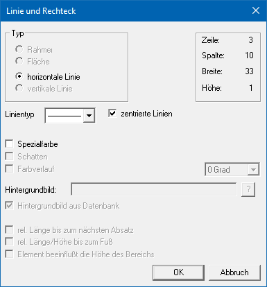

Ø Linie
Der Button "Linie" dient dazu, Linien auf dem Formular abzulegen. Dabei stehen entweder horizontale oder vertikale Linien zur Auswahl.
Um eine horizontale Linie zu konstruieren, muss lediglich mit der Maus das Auswahlrechteck positioniert werden. Die Linien lassen sich leicht verschieben und in ihrer Länge bearbeiten. Dazu muss lediglich mit dem Zeiger auf das Element geklickt werden. Anschließend kann die Linie mit Klick auf die schwarzen Markierungspunkte bearbeitet werden.
Eigenschaftsfenster "Linie und Rechteck"
Über das Eigenschaftsfenster "Linie und Rechteck" können unterschiedlichste Einstellungen für eine Linie vorgenommen werden.

Ø Typ
In Abhängigkeit der Linie (horizontal oder vertikale) wird an dieser Stelle die Art dargestellt und ist nicht änderbar.
Ø Linientyp
Aus der Auswahlbox kann der Linie eine spezielle Form zugewiesen werden.
Ø zentrierte Linie
Wird diese Option aktiviert, beginnt die Linie im Zentrum der definierten Spalte / Zeile. Ist diese Option deaktiviert, wird die Linie oberhalb der Spalte bzw. am Anfang der Zeile dargestellt und gedruckt.
Ø Spezialfarbe
Durch Aktivieren dieser Checkbox kann die Farbe gewählt werden, in welcher die Linie gedruckt werden soll. Bleibt die Checkbox deaktiviert, so wird die Linie schwarz dargestellt.
Hinweis
Wenn eine Farbe ausgewählt wurde, dann wird diese neben der Option dargestellt. Durch Anwahl der Farbe (hier "grün") kann diese direkt geändert werden.
Ø Schatten
Diese Funktion steht nur bei dem Typ "Fläche" zur Verfügung.
Ø Farbverlauf
Diese Funktion steht nur bei dem Typ "Fläche" zur Verfügung.
Ø Hintergrundbild
Diese Funktion steht nur bei dem Typ "Fläche" zur Verfügung.
Ø rel. Länge bis zum nächsten Absatz
Diese Checkbox wird nur dann benötigt, wenn eine vertikale Linie in einem Mittelteil eingebaut wird. Dadurch wird gesteuert, dass die Linie bis zum Beginn der nächsten Mittelteilszeile gedruckt wird.
Beispiel
Wenn ein Multiline-Feld angedruckt wird (z.B. ein Textbaustein), dann kann nicht definiert werden, wie lang dieses Feld ist. Aus diesem Grund wird die Option "rel. Länge bis zum nächsten Absatz" gesetzt, wodurch die Linie automatisch so lange gedruckt wird, bis der Textbaustein zu Ende ist.
Ø rel. Länge/Höhe bis zum Fuß
Diese Option wird dann verwendet, wenn eine vertikale Linie im Kopfbereich eingebaut wird, welche automatisch bis zur ersten Zeile im Fußteil gedruckt werden soll.
Ø Element beeinflusst die Höhe des Bereichs
Wenn diese Option gesetzt ist, dann werden die Linien 1 Zeile weiter berechnet und schließen somit an die nächste Mittelteilszeile bzw. den Fußteil an. D.h. die vertikalen Linien müssen nicht länger als notwendig definiert werden.